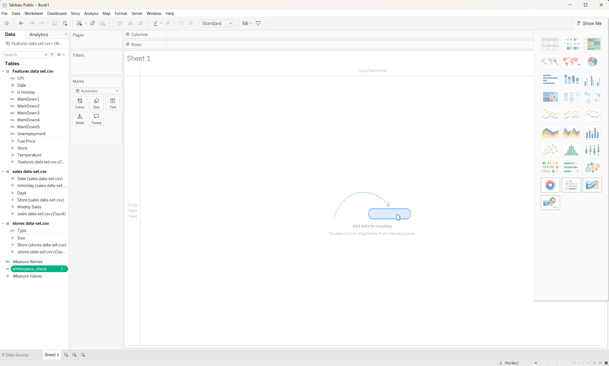

A necessary distinction
Tableau Desktop does have preparation tools
Tableau Desktop is not cleaning-free. On its Data Source page you can use features such as Data Interpreter, filtering, changing data types, renaming or hiding fields, splitting fields, pivoting data and creating calculated fields. When you connect a CSV, Tableau can also create an extract for analysis and performance.
The difference from Power Query is that Tableau Desktop is primarily designed to connect data and build analysis. Its cleaning actions are lighter and more field-specific; it is not a single, step-by-step transformation editor for applying the same operation across an entire data source. That is why the product family also has Tableau Prep for repeatable, broader cleaning flows.
TRIM([Type]) for the targeted whitespace example. Only move to Tableau Prep or upstream cleaning when the task genuinely involves many fields or a repeatable data pipeline.Official context: Tableau tips for working with data ↗, Data Interpreter ↗ and Tableau Prep cleaning operations ↗.
Choose the right cleaning tool
Do not trim hundreds of fields one by one
You are right: this feels more bitty than Power Query. In Tableau Desktop, a calculated field such as TRIM([Type]) is a targeted check for one named field. Desktop does not provide a universal “trim every text column” command.
For this exercise
Check the text fields that can affect categories or relationships. In this retail model, Type is the useful example. Store and Date are numeric/date fields after Tableau interprets them.
For batch cleaning
Use Tableau Prep if it is installed or available to you, or clean the CSV upstream in Power Query, pandas or SQL before connecting it to Tableau Desktop.
Tableau Prep batch route
- Connect the CSV in Tableau Prep and add a Clean step.
- Switch the profile area to List view if needed.
- Select the relevant text fields together.
- Open More options (…) → Clean → Trim Spaces.
- Use Remove Extra Spaces only when you also want repeated spaces inside a value replaced with a single space.
- Review the change list and output the cleaned data before reconnecting it in Tableau Desktop.
Official context: Tableau Prep cleaning operations ↗.
Important scope note
A calculation checks the field you name
whitespace_check is a calculated field in the workbook’s data source, but its formula refers specifically to [Type]. Because Type belongs to stores data-set.csv, Tableau lists the calculation beside the Stores fields. That is expected; it is not a copy that needs to be moved into the other tables.
If you want to check another text field, create another calculated field and replace [Type] with that field. Tableau cannot use one fixed formula to inspect every column automatically. In this retail model, Store and Date are numeric/date fields, so the useful text check is mainly for fields such as Stores Type or any other categorical text field.
Screen check
What your current worksheet shows

whitespace_check selected in the Data pane. The exclamation mark means Tableau is reporting a calculation problem or warning, so edit the field before dragging it into the view. Measure Names is a generated Tableau field; it is not a folder containing your check.The missing cleaning habit
Check and remove leading or trailing spaces
Yes: whitespace belongs in this lesson. A value can look like North while actually containing an invisible space, such as North . That can create duplicate categories, prevent a text key from matching, or make filters appear to contain repeated values.
TRIM() function removes leading and trailing spaces from a string; it does not remove meaningful spaces between words.1. Look for the problem
- Click Sheet 1 and choose Analysis → Create Calculated Field.
- Name the field
Type whitespace check. - Enter this formula:
IF [Type] <> TRIM([Type]) THEN "Has outer spaces" ELSE "Clean" END. - Click Apply and OK, then drag the new check field to Rows or Text.
- Drag the original
Typefield into the view as well. Look for values that appear identical but split into separate marks.
2. Create the cleaned value
- Create another calculated field named
Type_clean. - Enter
TRIM([Type]), then click Apply and OK. - Use
Type_cleanin filters, labels, colour and analysis instead of the untrimmed field.
Type_clean = TRIM([Type])
3. Validate that trimming changed what you expected
- Compare
COUNTD([Type])withCOUNTD([Type_clean]). - If the cleaned count is lower, whitespace had been creating extra categories.
- Spot-check the original and cleaned values before replacing the original in your analysis.
Store is numeric after Tableau interprets it, so the main whitespace risk is in text fields such as store type or other categorical values. If a key still contains hidden characters, clean it upstream or in Tableau Prep and then reload the model rather than quietly accepting unmatched records.Official context: Tableau string functions and TRIM ↗ and Data Interpreter ↗.
Follow the LMS in Tableau
Where the cleaning actions happen
Cleaning is split between the Data Source page and the worksheet Data pane. Return to the Data Source tab when you are filtering rows or checking the preview; use the worksheet Data pane when you are creating prepared calculated fields.
1. Filter the training period
- Click Data Source at the bottom left to return to the source page.
- At the top right, choose Filters → Add.
- Select the Features
Datefield, choose a date range, and set the start date to 1 November 2011. - If Tableau asks for scope, choose Features and all related tables.
- Choose Update Now and inspect the preview. The earliest visible date should now be in the intended training period.
2. Change the field types
- In the Data Source preview, locate the field heading, such as
Date,Weekly_SalesorCPI. - Click the small data-type icon or drop-down on the field heading.
- Set
Dateto Date,Weekly_Salesto a numeric type, andMarkDown1–5,CPIandUnemploymentto Number (decimal). - If a field contains literal text such as
NA, do not pretend it is a number. Treat it as missing first; otherwise Tableau may reject the conversion.
3. Create prepared fields from the worksheet
- Click Sheet 1 to open the worksheet.
- In the left Data pane, right-click a blank area or open the Analysis menu and choose Create Calculated Field.
- Give the calculation a name, paste the formula from this guide, then choose Apply or OK.
- Keep the original field and use the new
_filledor_handledfield in later charts.
For example, IFNULL([MarkDown1], 0) creates a prepared version; it does not prove that a missing Markdown value was genuinely zero.
4. Check the result before moving on
Create a temporary worksheet, place Date on Columns and a prepared numeric field on Rows, and confirm that Tableau treats the field as a date or number. Record a baseline sales total before adding more context fields.
Training window
Filter the data at the source
- On the Data Source page, choose Filters → Add.
- Choose the Features
Datefield and set the range from 1 November 2011 inclusive. - When current Tableau shows a Scope option, choose Features and all related tables so the filter carries through to Sales.
- Choose Update Now and check that the preview begins at the expected date.
Types and missingness
Make numbers actually numeric
Change string-like numeric fields before asking Tableau to add or average them:
| Fields | Target type | Why |
|---|---|---|
MarkDown1–5 | Number (decimal) | Required for filling, comparison and totals. |
CPI, Unemployment | Number (decimal) | Required for averages and calculations. |
Date | Date | Required for time filters, monthly axes and forecasting. |
Weekly_Sales | Number | Required for aggregation and charts. |
If the CSV contains literal NA, treat it as missing before converting to a number. A literal string is not the same as Tableau’s null value.
Calculated fields
Keep the original, create a prepared version
MarkDown1_filled = IFNULL([MarkDown1], 0)
MarkDown2_filled = IFNULL([MarkDown2], 0)
MarkDown3_filled = IFNULL([MarkDown3], 0)
MarkDown4_filled = IFNULL([MarkDown4], 0)
MarkDown5_filled = IFNULL([MarkDown5], 0)
CPI_filled = IFNULL([CPI], { FIXED : AVG([CPI]) })
Unemployment_filled = IFNULL([Unemployment], { FIXED : AVG([Unemployment]) })Use the prepared versions in the exercise, but keep the originals visible until you have checked the result. A calculated field is a transformation with a name: it is not evidence that the underlying data was correct.
Outlier handling
Apply the exercise rule explicitly
The LMS asks for negative values to be replaced with zero. That is a business rule, not a universal definition of an outlier:
MarkDown2_handled = IF [MarkDown2_filled] < 0 THEN 0 ELSE [MarkDown2_filled] END MarkDown3_handled = IF [MarkDown3_filled] < 0 THEN 0 ELSE [MarkDown3_filled] END MarkDown5_handled = IF [MarkDown5_filled] < 0 THEN 0 ELSE [MarkDown5_filled] END Weekly_Sales_handled = IF [Weekly_Sales] < 0 THEN 0 ELSE [Weekly_Sales] END
Check how many values were changed and whether negative values might have represented returns, corrections or a coding error. Never remove unusual values without understanding their meaning.
Validation
Small checks before moving on
Dates
Check the minimum and maximum dates and confirm the filter behaves in the related tables.
Types
Numbers should aggregate as numbers; dates should offer date parts and continuous dates.
Nulls
Compare null counts before and after filling. Zero is a chosen value, not proof that the measurement was observed.
Totals
Record a baseline Sales total before adding additional context fields to a worksheet.